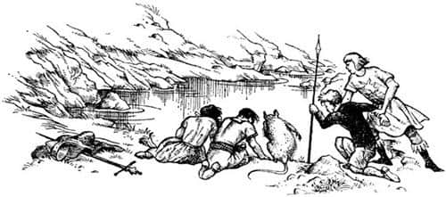

Tehlikeli İki Kaçış
Şafak Yıldızı, Ejderha Adası’nı terk ederken gemideki herkes çok neşeliydi. Koydan dışarıya çıkar çıkmaz güçlü bir rüzgârla karşılaştılar ve ertesi sabah erkenden, bilinmeyen bir kara parçasına ulaştılar. Eustace henüz bir ejderhayken, dağların üzerinde onunla birlikte uçan bazıları bu kara parçasını havadan görmüşlerdi. Tavşanlardan ve birkaç keçiden başka bir canlının yaşamadığı, düz ve yeşillik bir adaydı. Harabeye dönmüş taş kulübeleri ve yakılan ateşlerden geriye kalan siyahlıkları görünce bu adada insanların yaşadığına karar verdiler. Kemikler ve parçalanmış silahlar da vardı.
“Korsanların işi” dedi Caspian.
“Ya da ejderhanın” dedi Edmund.
Buldukları diğer şey sahildeki deri kayıktı: İnce dallarla örülmüş iskeletin üzerine deri kaplanarak yapılmıştı. Bir metreden biraz uzun, küçük bir kayıktı ve içindeki kürek de ona göre yapılmıştı. Bu kayığı görünce ya bir çocuk için yapıldığını ya da bu ülkenin insanlarının cüce olduğunu düşündüler. Bastıbacak kendisi için uygun büyüklükte olduğundan kayığı taşımaya karar verdi ve böylece kayık gemiye alındı. Bu adaya Yanık Ada ismini verdiler ve öğleden önce denize açıldılar.
Yaklaşık beş gün boyunca güney-güneydoğu rüzgârlarıyla birlikte, kara görüntüsünden uzak yol aldılar; ne bir martı ne de bir balık gördüler. Sonraki gün, öğleden sonraya kadar şiddetli bir yağmur yağdı. Eustace satrançta Bastıbacak’a iki kez yenildi ve yine eskisi gibi huysuzlaşmaya başladı. Edmund, Susan’la Amerika’ya gidebilmiş olmayı istediğini söyledi. O zaman Lucy kıç penceresinden dışarıya bakarak dedi ki:
“Hey! Sanırım yağmur dindi. Ama şu da ne?”
Bunun üzerine hepsi düşe kalka geminin kıçına çıktılar ve yağmurun dindiğini gördüler. Nöbette olan Drinian geminin ardındaki bir şeye dikkatle bakmaktaydı. Daha doğrusu birçok şeye bakmaktaydı. Yuvarlak kayalara benziyorlardı ve yaklaşık on iki metre mesafeyle yüzlercesi sıradaymış gibi görünüyordu.
“Bunlar kaya olamaz” diyordu Drinian, “çünkü beş dakika önce orada hiçbir şey yoktu.”
“Bir tanesi az önce kayboldu” dedi Lucy.
“Evet, bir tanesi yüzeye çıkıyor” dedi Edmund.
“Ve yaklaşıyor” dedi Eustace.
“Durun!” dedi Caspian. “Hepsi bize doğru geliyor.”
“Bizden çok daha hızlı hareket ediyorlar, efendim” dedi Drinian. “Bir dakika içinde yakalayacaklar.”
Hepsi nefeslerini tuttu, çünkü ne karada ne de denizde, bilinmeyen bir şey tarafından takip edilmek hiç de hoş değildir. Ancak ne olduğunu öğrendiklerinde, bunun beklediklerinden de kötü olduğunu gördüler. İskele tarafından sadece bir taş atımı uzaklıkta, denizden dehşet verici bir baş çıktı. Yer yer mor lekelerle kaplı (deniz kabuklarının yapışmış olduğu yerler hariç) yeşilli kızıllı bir baştı bu ve kulakları olmamasına rağmen, bir atın başını andırıyordu. Kocaman gözleri vardı; okyanusun karanlık derinliklerini görebilecek şekilde yaratılmış gözleri ve balıklarınkine benzer keskin dişlerle dolu açık ağzını görebiliyordunuz. Önce boynu sandıkları şey ortaya çıktı, ama daha fazlasını gördükçe herkes bunun boyun değil, vücut olduğunu ve sonunda birçok insanın, budalalık edip görmeye can attığı şeyi – büyük Denizyılanı’nı – görmekte olduklarını anladılar. Devasa kuyruğunun yer yer suyun yüzüne çıkmış kıvrımları çok uzaklardan seçilebiliyordu. Başı artık direği bile aşmıştı.
Herkes silahlarının başına koştu, ama yapılacak bir şey yoktu, canavara ulaşmak mümkün değildi. “Ok atın! Ok atın!” diye bağırdı okçubaşı. Birçoğu verilen emre itaat etti, ancak oklar, deniz canavarının derisi sanki çelik levhalarla kaplıymış gibi sekti. Sonra herkesin, canavarın gözleri ile ağzına bakarak ve nereye saldıracağını merak ederek hareketsiz kaldığı bir dehşet anı yaşandı.
Ne var ki, canavar saldırmadı. Başını geminin üzerine, direğin sereniyle aynı hizaya uzattı. Şimdi başı mevzilendikleri yerin hemen yanındaydı. Başını sancak küpeştesinin üzerinden geçene kadar uzattı. Sonra baş – kalabalığın olduğu güverteye değil de suya doğru – alçalmaya başladı, böylece canavar geminin üstünde bir kemer oluşturmuştu. Ardından bu kemer daraldıkça daraldı, sancak tarafında, Denizyılanı neredeyse Şafak Yıldızı’nın kenarına dokunuyordu.
Yağmura kadar var gücüyle iyi bir çocuk olmaya çalışan, ama satranç yüzünden eskiye dönen Eustace, yaşamında ilk defa cesur davrandı. Caspian’ın ödünç verdiği bir kılıcı kuşanmıştı. Yılanın vücudu sancak tarafına yeterince yaklaşır yaklaşmaz küpeşteye sıçradı ve bütün gücüyle canavara vurmaya başladı. Caspian’ın en iyi ikinci kılıcını paramparça etmenin ötesinde bir şey başaramadığı doğru, ancak yeni başlayan biri için yaptığı gerçekten mükemmeldi.
Eğer Bastıbacak, “Savaşmayın! İtin!” diye bağırmasaydı diğerleri de kavgaya katılacaktı. Farenin kavga edilmemesi gerektiğini söylemesi öyle alışılmadık bir şeydi ki, o dehşet anında bile bütün gözler ona döndü. Yılanın ilerisinde küpeşteye sıçrayıp, küçük tüylü sırtını canavarın pullarla kaplı yapış yapış kocaman vücuduna yaslayarak bütün gücüyle itmeye başladığında, bir sürü insan onun ne demek istediğini anlayıp aynısını yapmak üzere geminin her iki yanına koştu. Biraz sonra, Denizyılanı’nın başı bu kez arkası onlara dönük şekilde iskele tarafında yeniden göründüğünde herkes durumu anlamıştı.
Hayvan kendisini Şafak Yıldızı’nın etrafına sarmıştı ve halkayı daraltmaya başlıyordu. Çemberi iyice daralttığında – çatır çutur! – geminin olduğu yerde kibrit çöpleri yüzüyor olacak ve canavar onları sudan birer birer toplayacaktı. Tek şansları halkayı kıçın üzerinden geçene kadar geriye itmekti ya da (aynı şeyi bir başka şekilde söylersek) gemiyi ileriye doğru iterek halkanın dışına çıkmaktı.
Bastıbacak’ın bunu tek başına yapma şansı, bir binayı havaya kaldırma şansından fazla değildi, ama diğerleri onu bir kenara itmeseydi bunu yapmaya çalışırken neredeyse kendisini öldürecekti. Çok geçmeden, Lucy ve fare hariç (bayılmıştı), geminin bütün adamları küpeşte boyunca iki sıra olmuştu, her adamın göğsü, önündeki adamın sırtındaydı ve böylece bütün sıranın ağırlığı son adamda olmak üzere yaşamlarını kurtarmak için itmeye başlamışlardı. Dehşet verici birkaç saniye boyunca (sanki saatlerce sürmüştü) sanki hiçbir şey olmadı. Eklemler çatırdadı, su gibi ter boşandı, soluk soluğa kaldılar. Sonra geminin hareket ettiğini hissettiler. Halkanın direkten eskisine oranla daha uzakta olduğunu gördüler. Ancak aynı anda halkanın küçüldüğünü de fark ettiler. Gerçek tehlikeyle burun burunaydılar. Geminin kıçı halkadan geçecek miydi yoksa halka çok mu dardı? Evet, az farkla geçecekti. Canavar kıç küpeştesine değiyordu. En az bir düzine adam kıça koşturdu. Böylesi çok daha iyiydi. Denizyılanı’nın vücudu şimdi öylesine alçaktaydı ki, kıçta tek sıra olup yan yana itebilirlerdi. Umutları artmıştı, ancak birden kıçtaki yüksek ağaç oymaları ve Şafak Yıldızı’nın ejderha kuyruğunu hatırladılar. Hayvanı bunun üzerinden geçirmek oldukça zor olacaktı.
“Balta!” diye bağırdı Caspian boğuk sesle. “İtmeye devam edin.” Ana güvertede ayakta durmuş yukarıya, kıça bakmakta olan ve her şeyin nerede olduğunu bilen Lucy, Caspian’ı duymuştu. Birkaç saniye içinde aşağıya inip baltayı almıştı ve simdi kıça çıkan merdivenlere doğru koşuyordu. Tepeye ulaşmak üzereyken sanki bir ağaç devriliyormuş gibi korkunç bir çatırtı duyuldu ve gemi sallanarak ileriye fırladı. Çünkü o anda ya Denizyılanı böylesine bir güçle baş edemediğinden ya da aptallık edip ilmiği kısmaya karar verdiğinden, kıçtaki ağaç oymalar kırılmış ve gemi kurtulmuştu.
Diğerleri Lucy’nin gördüğü şeyi göremeyecek kadar yorgundu. Birkaç metre gerilerinde, Denizyılanı’nın halkası küçülüp kaybolmuştu. Lucy (kuşkusuz o anda çok heyecanlıydı ve hayal görüyor olabilirdi) yaratığın yüzünde aptalca bir memnuniyet ifadesi gördüğünü söyledi. Ama kesin olan bir şey varsa o da çok aptal bir hayvan olduğuydu, çünkü gemiyi takip etmek yerine başını döndürüp sanki Şafak Yıldızı’nın enkazını orada bulacakmış gibi vücudunun her tarafını koklamaya başlamıştı. Şafak Yıldızı ise, serin bir rüzgâra yelken açıp uzaklaşmıştı; adamlar güverteye yığılmış nefes nefese inliyorlardı. Az sonra olay hakkında konuşup gülüşmeye başladılar. Rom dağıtıldığında tezahürat bile yaptılar; herkes Eustace’in ve Bastıbacak’ın cesaretini (bir işe yaramamış olsa da) övdü. Bundan sonra üç gün daha yol aldılar; gökyüzü ve denizden başka bir şey görmediler. Dördüncü gün rüzgâr kuzeyden esmeye ve deniz kabarmaya başladı; öğleden sonra hava neredeyse fırtınaya dönmüştü. Ama aynı anda iskele tarafında kara görünmüştü.
“İzninizle, efendim” dedi Drinian, “kürek çekerek şuradaki koya girip fırtına bitene kadar demirlemeyi deneyeceğiz.” Caspian bunu onayladı, ama uzun süre kürek çekmelerine rağmen, fırtınadan dolayı karaya ancak akşamüstü ulaşabildiler. Günün son ışıklarıyla birlikte doğal bir limana doğru dümen kırdılar ve demirlediler, o gece kimse karaya çıkmadı. Sabahleyin, kayalık bir zirveye doğru yükselen, engebeli ve ıssız bir ülkenin yeşil körfezinde buldular kendilerini. Zirvenin kuzeyinden hızla bulutlar geliyordu. Kayığı indirdiler ve artık boşalmış olan su fıçılarını yüklediler.
“Hangi dereden dolduracağız, Drinian?” dedi Caspian, kayığın kıç tahtalarının üzerinde yerini alırken. “Körfeze dökülen iki dere var gibi görünüyor.”
“Fark etmez, efendim” dedi Drinian. “Doğudakine, sancak tarafındakine daha çabuk ulaşacağımızı sanıyorum.”
“Yağmur başlıyor” dedi Lucy.
“Sanırım başladı!” dedi Edmund, çünkü şimdiden şiddetli bir biçimde yağıyordu. “Bence diğer dereye gidelim. Orada ağaçlar var, en azından sığınacak bir yer buluruz.”
“Evet, oraya gidelim” dedi Eustace. “Gereğinden fazla ıslanmanın anlamı yok.”
Bu sırada, siz onlara yanlış yolda olduklarını açıklamaya çalışırken arabalarıyla altmış kilometre hızla gitmeye devam eden yorgun şoförler gibi, Drinian sürekli sancak tarafına doğru dümen kırıyordu.
“Hakları var, Drinian” dedi Caspian. “Neden kayığın başını döndürüp batıdaki dereye gitmiyorsun?”
“Majesteleri nasıl isterse” dedi Drinian. Bir önceki gün hava yüzünden endişeli bir gün geçirmişti ve kara insanlarının öğütlerinden hoşlanmıyordu, ama yine de yönünü değiştirdi ve daha sonra anlaşıldı ki bunu yapmakla iyi etmişti.
Su doldurmayı bitirdiklerinde yağmur dinmişti. Caspian, Eustace, Pevensie Kardeşler ve Bastıbacak ne görülebildiğini öğrenmek amacıyla tepeye yürümeye karar verdiler. Vahşi otlar ve çalılıklar arasında zorlu bir yürüyüş yaptılar ve martılar hariç herhangi bir canlı görmediler. Tepeye ulaştıklarında buranın çok küçük bir ada olduğunu anladılar; bu yükseklikten deniz, Şafak Yıldızı’nın güvertesinden, hatta silah güvertesinden göründüğünden daha engin ve ıssız görünüyordu.
“Nereye varacağımıza dair bir fikrimiz olmadan yelken açmak, biliyorsun, düpedüz delilik” dedi Eustace Lucy’ye alçak bir sesle, ufka bakarak. Bunu sadece alışkanlıktan dolayı söylemişti; bir zamanlar yaptığı gibi, gerçekten kötü davranmak amacıyla değil.
Hava tepede uzun süre kalınamayacak kadar soğuktu, çünkü rüzgâr hâlâ kuzeyden ve serin esiyordu.
“Aynı yoldan dönmeyelim” dedi Lucy, “birazcık ilerleyip öbür derenin yanına, Drinian’ın gitmek istediği derenin yanına inelim.”
Herkes kabul etti ve yaklaşık on beş dakika sonra ikinci derenin kaynağındaydılar. Umduklarından daha ilginç bir yerdi; suyun dışarıya aktığı deniz tarafındaki dar bir kanal hariç kayalıklarla çevrelenmiş derin ve küçük bir dağ gölüydü bu. Burada rüzgâr esmiyordu ve hepsi kayalığın üstündeki çalılıklarda dinlenmek üzere oturdu.
Hepsi oturdu, ama birisi (Edmund) aniden ayağa sıçradı.

“Bu adada sivri taşları seviyorlar” dedi çalılıkların arasında el yordamıyla bir şeyler aranarak. “Nerede o kör olası şey?.. Hah, şimdi buldum… Ne! Taş falan değilmiş, bu bir kılıç kabzası. Hayır, aman Tanrım, bir kılıçtan artakalanlar. Yıllardır burada duruyor olmalı.”
“Görüntüsüne bakılırsa Narnia kılıcı” dedi Caspian, hepsi etrafına üşüşürken.
“Ben de bir şeyin üzerinde oturuyorum” dedi Lucy. “Sert bir şey.” Bunun bir zincir zırh olduğu ortaya çıktı. Artık herkes dizleri üzerinde sık çalılıklarda bir şeyler arıyordu. Araştırmaları sonucu, bir miğfer, bir hançer ve birkaç madeni para bulundu; bunlar Calormen Ay Liraları değildi, fakat Kunduzbarajı’nda ya da Beruna’daki pazaryerlerinde görebileceğiniz orijinal Narnia “Aslan”ı ve “Ağaç”larıydı.
“Yedi lorddan birinden geriye kalanlarmış gibi görünüyor” dedi Edmund.
“Ben de aynı şeyi düşünüyordum” dedi Caspian. “Hangisi olduğunu merak ediyorum. Hançerin üzerinde bunu gösterecek bir işaret yok. Tabii nasıl öldüğünü de merak ediyorum.”
“Ve intikamını nasıl alacağımızı” diye ekledi Bastıbacak.
Bu arada, grupta çeşitli dedektif hikâyeleri okumuş tek kişi olan Edmund düşünüyordu.
“Buraya bakın” dedi, “bu işte bir bit yeniği var. Bir kavgada öldürülmüş olamaz.”
“Neden?” diye sordu Caspian.
“Hiç kemik yok” dedi Edmund. “Düşman zırhları alıp cesedi bırakabilir. Ancak kavgayı kazanıp da cesedi taşıyan ve zırhları bırakan birine kim rastlamış ki?”
“Belki vahşi bir hayvan tarafından öldürülmüştür” dedi Lucy.
“Adamın zırhını çıkarması için” dedi Edmund, “epey zeki bir hayvan olması lazım.”
“Belki bir ejderhadır” dedi Caspian.
“Olmaz” dedi Eustace. “Ejderha yapamaz bunu. Ben bilirim.”
“Şey, her neyse, buradan uzaklaşalım” dedi Lucy. Edmund kemiklerden bahsettiğinden beri oturmak istemiyordu.
“Nasıl isterseniz” dedi Caspian ayağa kalkarak. “Bence bu aletlerin hiçbiri taşımaya değmez.”
Gölün etrafını dolaşıp aşağıya, derenin gölden çıktığı yere geldiler ve kayalıkların çevrelediği derin suya bakarak ayakta durdular. Sıcak bir gün olsaydı kuşkusuz bazıları yüzmek ve su içmek isterdi. Bastıbacak ve Lucy aynı anda, “Bakın” diye bağırdığında, Eustace eğilip avuçlarıyla su almak üzereydi ki, içmekten vazgeçip suya baktı.
Gölün dibi büyük grimsi mavi taşlarla kaplıydı ve su tamamıyla berraktı. Dipte, görünüşe bakılırsa altından yapılmış bir adam heykeli, kollarını başının üzerine uzatmış yüzüstü yatmaktaydı. Tesadüf bu ki, ona bakarken bulutlar açıldı ve güneş çıktı. Altın heykel bir uçtan öbür uca aydınlandı. Lucy bunun yaşamında gördüğü en güzel heykel olduğunu düşünüyordu.
“Vay!” diye ıslık çaldı Caspian. “Geldiğimize değdi doğrusu! Acaba çıkarabilir miyiz?”
“Dalarak çıkarabiliriz, efendim” dedi Bastıbacak.
“İşe yaramaz” dedi Edmund. “En azından, gerçekten altınsa – tamamıyla altınsa – yukarıya çıkarılamayacak kadar ağırdır. Tahminim doğruysa bu göl dört ya da beş metre derinliğinde. Ama bir dakika. Yanımda avlanmak için ok getirdiğim iyi olmuş. Bakalım derinliği ne kadar. Caspian, elimi tut da suya eğileyim biraz.” Caspian Edmund’un elini tuttu ve Edmund öne doğru eğilerek okunu suya bırakmaya başladı.
Daha yarısı girmeden Lucy, “Heykelin altın olduğunu sanmıyorum. Işık oyunu. Senin okun da aynı renk görünüyor” dedi.
“Ne oluyor?” dedi bir sürü ses aynı anda; çünkü Edmund aniden oku bırakıvermişti.
“Tutamıyordum” dedi Edmund, “o kadar ağırdı ki.”
“İşte şimdi dipte” dedi Caspian, “Lucy haklıymış. Heykelle aynı renkte görünüyor.”
Çizmelerinde bir sorun varmış gibi görünen Edmund – eğilmiş, ayaklarına bakmaktaydı – aniden doğruldu ve çok az insanın duymazdan gelebileceği tiz bir sesle bağırdı:
“Geriye çekilin! Sudan uzaklaşın. Hepiniz. Hemen!”
Hepsi geriye çekildi ve Edmund’a baktılar.
“Bakın” dedi Edmund, “çizmelerimin burnuna bakın.”
“Biraz sarımsı görünüyorlar” diye başladı söze Eustace.
“Altın, tamamen altın” diye sözünü kesti Edmund. Dokunun. Deri şimdiden altından ayrılmış. Kurşun gibi de ağır.”
“Aslan adına!” dedi Caspian. “Demek istediğin—”
“Evet” dedi Edmund. “Su her şeyi altına dönüştürüyor. Oku altına dönüştürdü, bundan dolayı o kadar ağırlaşmıştı. Hafifçe ayaklarıma çarpıyordu (iyi ki yalınayak değildim) ve ayakkabılarımın burunlarını altına çevirdi. Şu dipteki zavallı adam – eh, anlıyorsunuz ya.”
“Öyleyse heykel falan değil” dedi Lucy, alçak bir sesle.
“Hayır. Her şey apaçık ortada. Sıcak bir günde buradaydı o. Kayalıkların üstünde, bizim oturduğumuz yerde soyundu. Elbiseleri çürüyerek yok oldu ya da yuva yapmak için kuşlar tarafından götürüldü; zırhı hâlâ orada. Sonra suya daldı ve—”
“Hiç anlatma” dedi Lucy. “Ne korkunç bir şey.”
“Ucuz kurtulduk” dedi Edmund.
“Gerçekten ucuz” dedi Bastıbacak. “Herhangi birimizin parmağı, ayağı, bıyığı ya da kuyruğu her an suya değebilirdi.”
“Buna rağmen” dedi Caspian, “bir deney daha yapalım.” Eğilerek bir demet çalı çekip kopardı. Sonra çok dikkatle gölün yanına diz çöktü ve çalıyı suya daldırdı. Daldırdığı çalıydı, fakat çıkardığı ağır, kurşun gibi yumuşak, saf altından mükemmel bir çalı heykeliydi.
“Bu adaya sahip olan kral” dedi Caspian, usulca ve yüzü kızararak, “kısa sürede dünyadaki kralların en zengini olur. Bu adaya bir Narnia mülkü olarak el koyuyorum. Adı Altınsu Adası olsun. Bu sırrın aramızda kalmasını istiyorum. Kimse bunu bilmemeli. Drinian dahil kimseye, öldürseler bile söylememeliyiz, anladınız mı?”
“Kiminle konuşuyorsun?” dedi Edmund. “Ben senin kulun değilim. Kulluk söz konusuysa tam tersi geçerli. Ben Narnia’nın dört eski hükümdarından biriyim ve sen kardeşim Yüce Kral’a bağlılık yemini ettin.”
“İşler bu hale geldi ha, Kral Edmund?” dedi Caspian, elini kılıcının kabzasına götürerek.
“Hadi, yapmayın” dedi Lucy. “Erkeklerle bir şey yapmanın en kötü yanı da bu. Hepiniz öylesine zorba ve aptalsınız ki – oooff!” Sesi boğuldu kaldı. Herkes onun gördüğünü gördü.
Üstlerindeki gri yamaçtan – çünkü çalılıklar henüz yeşermemişti – görüp görecekleri en büyük aslan geçmişti. Sessizdi ve onlara hiç bakmamıştı. Güneş bulutların ardına saklanmıştı ama o, güneşin alnındaymış gibi, parıl parıl parlıyordu. Daha sonra bundan bahsederken Lucy, “Bir fil büyüklüğündeydi” dedi, ama başka bir sefer, “At büyüklüğündeydi” demişti. Aslında önemli olan büyüklüğü değildi. Kimse onun ne olduğunu sormaya yeltenmedi. Onun Aslan olduğunu biliyorlardı.
Kimse onun nereye gittiğini görmedi. Birbirlerine uyku sersemi insanlar gibi baktılar.
“Ne diyorduk?” dedi Caspian. “Yine eşeklik mi ediyorum?”
“Efendim” dedi Bastıbacak, “burası lanetli bir yer. Hemen gemiye dönelim. Eğer bu adaya isim koymak şerefi bana verilseydi ismini Ölümsuyu koyardım.”
“Bu bana çok iyi bir isim gibi geliyor, Bastıbacak” dedi Caspian, “ama düşünüyorum da, nedenini bilemiyorum. Hava düzeliyor gibi, sanırım Drinian demir almak isteyecektir. Ona anlatacak ne çok şey var.”
Gerçekte fazla bir şey yoktu, çünkü son saatlerde yaşananlar çok karmaşık bir hal almıştı.
Drinian saatler sonra, Şafak Yıldızı bir kez daha yelken açmış giderken ve Ölümsuyu Adası ufukta kaybolurken Rhince’e, “Kayığa geldiğinizde hepiniz büyülenmiş gibi görünüyordunuz” dedi. “Orada onlara bir şey oldu. Açıklığa kavuşturabildiğim tek şey, aradığımız lordlardan birinin cesedini bulduklarını sanmaları.”
“Yok be, Kaptan!” diye cevapladı Rhince. “Eh, bu üçüncüsü. Dört tane daha var. Bu gidişle yılbaşından hemen sonra eve dönmüş olacağız. Bundan daha iyi bir şey olamaz. Tütünüm azaldı. İyi geceler, efendim.”